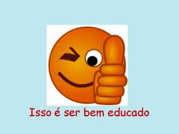
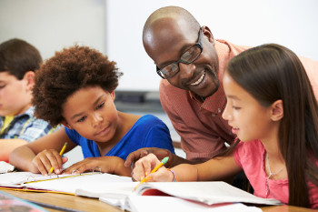

Em algumas famílias é normal que se usem palavrões como forma de se tratar, pais chamam filhos de burro, porco, mas é bom lembrá-los que filho de porco só pode ser porquinho, que filho de burro também é burrinho e que não somos animais para recebermos tratamento como se o fôssemos, de forma grosseira e pejorativa. Outra coisa que compromete muito a educação da criança é quando ela não recebe informações adequadas de higiene, como limpar o nariz no banheiro, assuando o mesmo e lavando as mãos com água e sabão, e não tirando as secreções por todos os cantos da casa ou mesmo na rua, na frente de outras pessoas. Comum também é ver a família rindo, se divertindo quando a criança está com flatos, soltando seus gases em qualquer lugar, na frente de qualquer um. É claro que a criança muito pequena demora certo tempo para conseguir controlá-los, mas por volta dos dois anos, quando já consegue fazer o controle dos esfíncteres, esse domínio pode ser aprendido também, se esse for o exemplo dado pela família. No caso dos arrotos, o bebê deve praticá-lo sim, para não ter perigo de engasgar com os refluxos, mas, aos poucos, à medida que cresce, deve deixar o hábito também.
/*Fundamentos legais da educação: Princípios e fins da educação brasileira
*/Os atuais princípios e fins da educação brasileira estão definidos no título II - Dos Princípios e Fins da Educação Nacional, nos artigos 2º e 3º, da Lei de Diretrizes e Bases da Educação Nacional (LDB) - Lei nº. 9.394/96. O artigo 2º afirma que “a educação é dever da família e do Estado, inspirada nos princípios de liberdade e nos ideais de solidariedade humana, tem por finalidade o pleno desenvolvimento do educando, seu preparo para o exercício da cidadania e sua qualificação para o trabalho”. Já, o artigo 3º reafirma o disposto no artigo 206 da CF, estabelecendo que: O ensino será ministrado nos seguintes princípios: I - igualdade de condições para o acesso e permanência na escola; II – liberdade de aprender, ensinar, pesquisar e divulgar a cultura, o pensamento, a arte e o saber; III – pluralismo de ideias e de concepções pedagógicas; IV - respeito à liberdade e apreço à tolerância; V – coexistência de instituições públicas e privadas de ensino; VI – gratuidade do ensino público em estabelecimentos oficiais; VII - valorização do profissional da educação escolar; VIII - gestão democrática do ensino público, na forma desta Lei e da legislação dos sistemas de ensino; IX - garantia de padrão de qualidade; X - valorização da experiência extraescolar; XI- vinculação entre a educação escolar, o trabalho e as práticas sociais. A atual LDB não se preocupa apenas em garantir o acesso ao aluno na escola, mas também sua permanência. É possível entender este dispositivo se nos reportarmos às altas taxas de evasão e repetência indicadas pelas pesquisas realizadas na década de 1990. Traz também a proposta da gestão democrática, o que possibilitou a formação de colegiados escolares, eleição para escolha do diretor, etc. Ampliou o conceito de educação para além do espaço escolar quando a vincula com o mundo do trabalho, a qualificação profissional e as práticas sociais, com vistas ao exercício da sua cidadania, ideia reforçada no artigo 1º da LDB. A educação abrange os processos formativos que se desenvolvem na vida familiar, na convivência humana, no trabalho, nas instituições de ensino e pesquisa, nos movimentos sociais e organizações da sociedade civil e nas manifestações culturais. Uma vez promulgada a lei é preciso refletir nas reais condições para sua aplicação, pois há um espaço muito grande entre o discurso proclamado e a prática vivida. Sabemos das condições das escolas brasileiras, das condições de trabalho do professor, do atendimento e suporte oferecido pelo poder público, nos mais diversos rincões deste Brasil tão desigual. Talvez devamos nos perguntar como se dá o ensino para o pleno desenvolvimento do aluno, preparação para o trabalho e cidadania nas escolas do interior do nordeste ou das regiões ribeirinhas da região norte, onde os alunos andam de barco e a pé por quilômetros para chegar à escola, que por sua vez, não tem merenda, com um só professor, trabalhando no sistema multisseriado, fazendo todas as funções, de docente a merendeira, com salário irrisório, mas garantindo a única oportunidade de escolarização para aquela clientela. Existe um enorme abismo entre as intenções e as realizações. Isso nos deixa mais preocupados ainda se pensarmos no artigo 6º da CF, que estabelece “São direitos sociais a educação, a saúde, o trabalho, a moradia, o lazer, a segurança, a previdência social, a proteção à maternidade e à infância, a assistência aos desamparados, na forma desta Constituição”. Para pensarmos mais um pouco, me pergunto onde são aplicados os suados impostos, que os brasileiros pagam, em tudo que consome, ou melhor ainda, como são aplicados, para onde vão, somem nos túneis da corrupção e nós assistimos sem o menor sinal de conscientização e força para mobilização no sentido de fazer valer a lei magna deste País.
Significado de Educação
No seu sentido mais amplo, educação significa o meio em que os hábitos, costumes e valores de uma comunidade são transferidos de uma geração para a geração seguinte. A educação vai se formando através de situações presenciadas e experiências vividas por cada indivíduo ao longo da sua vida. O conceito de educação engloba o nível de cortesia, delicadeza e civilidade demonstrada por um indivíduo e a sua capacidade de socialização. De acordo com o filósofo teórico da área da pedagogia René Hubert, a educação é um conjunto de ações e influências exercidas voluntariamente por um ser humano em outro, normalmente de um adulto em um jovem. Essas ações pretendem alcançar um determinado propósito no indivíduo para que ele possa desempenhar alguma função nos contextos sociais, econômicos, culturais e políticos de uma sociedade. No sentido técnico, a educação é o processo contínuo de desenvolvimento das faculdades físicas, intelectuais e morais do ser humano, a fim de melhor se integrar na sociedade ou no seu próprio grupo. Educação (do latim educations) no sentido formal é todo o processo contínuo de formação e ensino aprendizagem que faz parte do currículo dos estabelecimentos oficializados de ensino, sejam eles públicos ou privados. No Brasil, de acordo com a Lei de Diretrizes e Bases, a Educação divide-se em dois níveis, a educação básica e o ensino superior. A educação básica compreende a Educação Infantil, o Ensino Fundamental e o Ensino Médio. A educação nacional remete para o grupo de órgãos que fazem a gestão do ensino público e fiscalização do ensino particular. No processo educativo em estabelecimentos de ensino, os conhecimentos e habilidades são transferidos para as crianças, jovens e adultos sempre com o objetivo desenvolver o raciocínio dos alunos, ensinar a pensar sobre diferentes problemas, auxiliar no crescimento intelectual e na formação de cidadãos capazes de gerar transformações positivas na sociedade. A educação não se limita apenas a normais morais e intelectuais, mas também pode estar relacionada com o aspecto físico, como é o caso da educação física.



♦ Educação e a Revolução Industrial Esse longo processo iniciou-se com a industrialização e a expansão das cidades que ocorreram no período da Revolução Industrial. Anteriormente, até as primeiras décadas do século XIX, a maioria da população europeia não tinha nenhum acesso a qualquer tipo de educação escolar. Porém, o rápido avanço tecnológico exigia a formação de mão de obra instruída, capaz de realizar as tarefas que exigiam maior nível de especialização. Na medida em que as ocupações tornavam-se mais complexas, a educação tradicional recebida em casa tornava-se mais e mais obsoleta, já que as experiências de trabalho diferenciavam-se cada vez mais no decorrer de um curto espaço de tempo. Diante dessa necessidade, surgiram as primeiras escolas técnicas que mais adiante tomariam o formato das escolas que vemos hoje. ♦ O papel da Escola segundo Bourdieu e Passeron Nos períodos que seguiram a rápida e continua industrialização, a escola tornou-se a instituição responsável pela manutenção do contexto estabelecido. Entre os inúmeros trabalhos teóricos que se dedicaram ao papel dessa instituição, os esforços de Pierre Bourdieu e Jean-Claude Passeron, em sua obra “A reprodução: Elementos para uma teoria do sistema de ensino”, são uns dos mais reconhecidos. Os autores buscam mostrar que o sistema de ensino moderno serve como ferramenta de manutenção dos paradigmas sociais estabelecidos. Ele molda aqueles que são entregues aos seus cuidados e exclui aqueles que não se submetem ou não se adaptam aos seus parâmetros. Os autores baseiam-se no conceito de “violência simbólica”, isto é, o ato de imposição arbitrária do sistema simbólico da cultura dominante de uma sociedade específica sobre os demais sujeitos que a integram.
